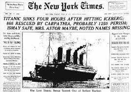
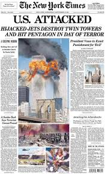

Article 1

Capital News" isn't one single publication but refers to various news outlets, such as the Capital Information Newspaper in Hyderabad, India, providing local and national coverage, and Capital TV (capitaltv.in), a Delhi-based internet TV channel focused on Indian social, political, and economic issues.
Article 2

The AI revolution signifies a paradigm shift driven by technologies that enable machines to think, learn, and act like humans, transforming industries and creating new opportunities for efficiency and innovation. It is considered a force comparable to past industrial revolutions, fundamentally altering business operations by automating tasks.
Article 3
This was one of the few accurate headlines printed on the day following the sinking of the Titanic. Journalists at some other papers were still in denial that a ship thought to be unsinkable could have failed so catastrophically: The Daily Mirror reported, "Everyone safe", and the Daily Mail, "No lives lost".
Article 4
Thursday is the 24th anniversary of the September 11, 2001, terrorist attacks.The day after, newspapers around the world captured the sadness, shock, and horror people felt.We compiled international front pages to show what people woke up to on September 12, 2001.The September 11, 2001, terrorist attacks happened 24 years ago.